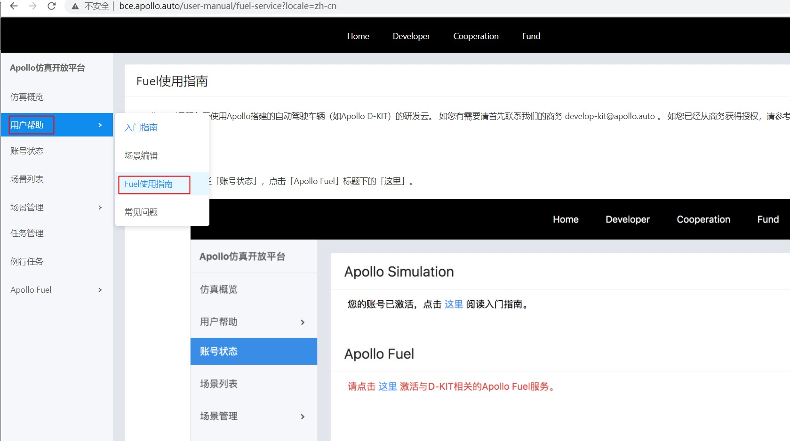
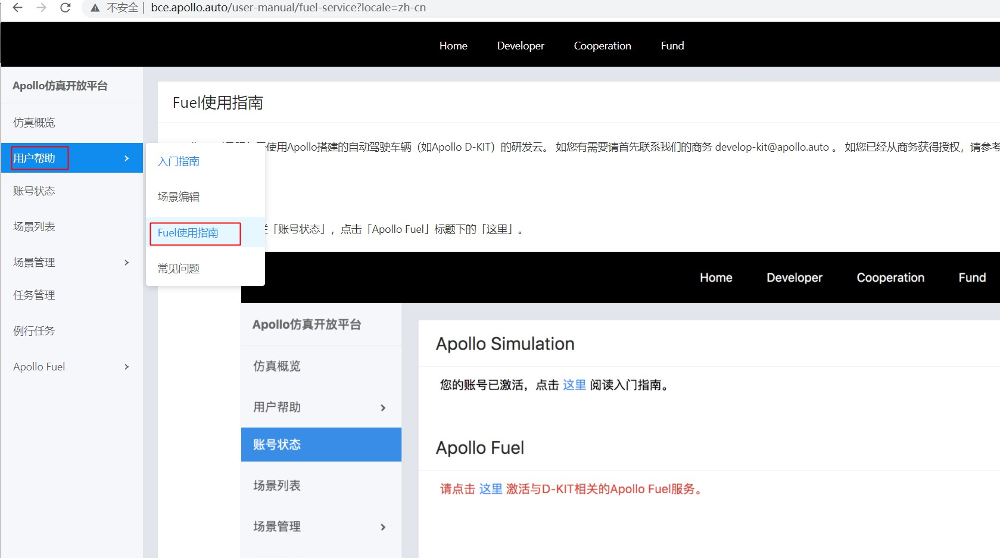

1. 开通云服务账号向导
1.1. 前提条件
请与商务部门联系(邮件develop-kit@apollo.auto)获得授权
1.2. 注册百度云BOS
按百度云对象存储BOS注册与基本使用向导注册百度云BOS
1.3. 开通云服务账号
打开Dreamland网址选择用百度账号登录，登录后点击左侧菜单栏「用户帮助」里的「Fuel使用指南」菜单项如下图所示，并按照文档开通云服务账号。

请与商务部门联系(邮件develop-kit@apollo.auto)获得授权
按百度云对象存储BOS注册与基本使用向导注册百度云BOS
打开Dreamland网址选择用百度账号登录，登录后点击左侧菜单栏「用户帮助」里的「Fuel使用指南」菜单项如下图所示，并按照文档开通云服务账号。
